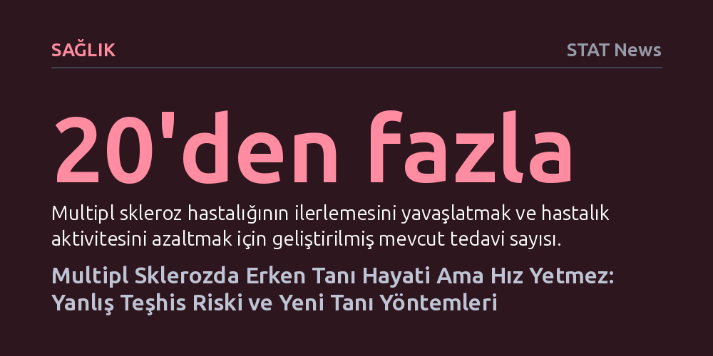

SAGLIK · STAT News · 2026-10-25
Multipl sklerozda kalıcı nörolojik hasarı önlemek için erken tanı kritik olsa da belirtilerin diğer hastalıklarla örtüşmesi sıkça yanlış teşhislere neden oluyor. Santral ven işareti ve güncellenen tanı kriterleri gibi yeni yöntemler, teşhisi hızlandırırken hatalı tedavilerin önüne geçmeyi amaçlıyor.
Nörolojik belirtilerde yalnızca hızlı tanıya odaklanmanın gereksiz ve zararlı tedavilere yol açabileceğini, bu nedenle hız kadar teşhis doğruluğunun da hayati olduğunu ortaya koyuyor.

Ünlü oyuncu Christina Applegate’in multipl skleroz (MS) teşhisi aldıktan beş yıl sonra aslında kendisine yanlış tanı konulduğunu açıklaması, nöroloji dünyasının en hassas tartışmalarından birini yeniden gündeme taşıdı. Bu itiraf, yalnızca bir sanatçının kişisel sağlık mücadelesini değil, modern tıbbın karşı karşıya olduğu temel bir denge sorununu gözler önüne seriyor: Bir hastayı kalıcı ve geri döndürülemez nörolojik hasarlardan koruyacak kadar erken teşhis etmek, ancak bunu yaparken isabetten ve doğruluktan ödün vermemek.
Teşhis sürecindeki hataların bedeli her iki senaryoda da oldukça ağırdır. Gerçekte MS olmadığı halde bu tanıyı alan bir hasta, bağışıklık sistemini baskılayan ağır ve gereksiz tedavilerin risklerine maruz kalırken, asıl rahatsızlığının doğru tedavisi gecikmektedir. Buna karşılık, gerçek bir MS hastasına zamanında tanı konulamaması, merkezi sinir sistemindeki hasarın birikmesine ve mevcut yirmiden fazla koruyucu tedavinin sağlayacağı faydanın kaçırılmasına yol açmaktadır.
Yazar Dr. Bruce Bebo'nun da vurguladığı gibi, "Hedefimiz hem MS'i daha erken teşhis etmek hem de teşhisi doğru koymak olmalıdır." Hız ve doğruluk arasındaki bu denge, nörolojideki tanı yaklaşımlarının merkezine yerleşmek zorundadır.
Multipl skleroz teşhisini bu denli güç kılan temel unsur, hastalığın klinik tablosunun kişiden kişiye büyük farklılıklar göstermesi ve kendine has tek bir belirtisinin bulunmamasıdır. Kollarda veya bacaklarda uyuşma, görme bozuklukları, kronik yorgunluk, denge kaybı ve yürüme güçlüğü gibi şikayetler onlarca farklı nörolojik rahatsızlıkta da birebir ortaya çıkabilmektedir.
Dahası, günümüzde tanı sürecinin omurgasını oluşturan manyetik rezonans görüntüleme (MR) dahi mutlak bir kesinlik sunamamaktadır. Beyin ve omurilik taramalarında saptanan beyaz lezyonlar yalnızca MS'e özgü değildir; damar hastalıklarından migrene, enfeksiyonlardan romatolojik hastalıklara kadar pek çok faktör MR üzerinde benzer izler bırakabilmektedir. Bu durum, radyolojik bulguların klinik tabloyla titizlikle eşleştirilmesini zorunlu kılmaktadır.
Neyse ki son yıllarda kaydedilen bilimsel ilerlemeler tanı hassasiyetini önemli ölçüde artırmıştır. Hekimlerin dünya çapında referans aldığı McDonald Tanı Kriterleri, yapılan güncellemeler sayesinde tanı sürecini yıllardan aylara indirmeyi başarmıştır. Bu kılavuza entegre edilen ileri görüntüleme teknikleri ve beyin omurilik sıvısı biyobelirteçleri, hastalığın erken safhalarda yakalanmasında büyük bir sıçrama sağlamıştır.
Bu alandaki en umut verici yeniliklerden biri, MR taramalarında "santral ven işareti" olarak adlandırılan anatomik özelliğin tespit edilmesidir. MS lezyonlarının merkezinde tipik olarak küçük bir toplardamar yer alırken, diğer hastalıklardan kaynaklanan lezyonlarda bu yapı görülmez. Santral ven işareti, hekimlerin MS'e bağlı doku hasarını benzer diğer durumlardan net biçimde ayırt etmesini sağlamaktadır. Gelecekte devreye girmesi beklenen yapay zekâ algoritmaları da görüntü analizlerindeki örüntüleri yakalayarak teşhis doğruluğunu bir üst seviyeye taşımayı vaat etmektedir.
Ne var ki en gelişmiş tanı teknolojileri ve en hassas biyobelirteçler bile, hastalar bu imkânlara erişemediği sürece klinik faydaya dönüşememektedir. Nörolojik sağlık hizmetlerine erişim küresel düzeyde ciddi dengesizlikler barındırmaktadır. Pek çok bölgede özellikle MS alanında uzmanlaşmış nörolog açığı bulunmakta; hastalar bir uzmandan randevu alabilmek için aylarca beklemek ya da kilometrelerce yol katetmek zorunda kalmaktadır.
Bir diğer kritik halka ise birinci basamak sağlık çalışanlarının eğitimidir. Açıklanamayan nörolojik şikayetlerle başvuran bir hastayı ilk değerlendiren genellikle aile hekimleri veya pratisyen hekimlerdir. Bu hekimlerin erken MS sinyallerini tanıması ve hastayı ne zaman vakit kaybetmeden bir nöroloğa sevk edeceğini bilmesi, kalıcı engelliliğin önlenmesinde hayati rol oynamaktadır. Bilimsel ilerlemenin sahaya yansıması, teşhis araçlarına yatırım kadar sağlık çalışanlarının eğitimine ve uzman erişiminin kolaylaştırılmasına bağlıdır.